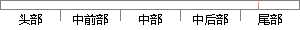

本文研究的内容是基于MFCC倒谱系数和高斯混合模型GMM的说话人识别系统。
片段位置图

相似结果|
相似片段 1：的提高。三、研究了基于 GMM和基于 SVM这两种说话人识别方法，通过实验比较了线性预测倒谱系数（LPCC）、美尔倒谱系数（MFCC）等特征参数，高斯混合模型的阶数，核函数等因素对识别性能的影响，得出了
相似片段 2：基于高斯混合模型的说话人识别技术周翠梅陈酷(大连JE_z_大学信息与通信工程学院，辽宁大连116023)摘要：本文实现了一种基于高斯混合模型的说话人识别系统．该系统采用语音信号的梅尔倒谱系数
相似片段 3：，MFCC)。这些统计模型和特征矢量，各有特点，也都有自己的不足之处。总体来讲，以MFCC与GMM或者MFCC与HMM的组合效果最好。本次实验就运用MFCC与GMM的组合对相关课题加以研究。4．2．2系统结构描述本文以ICSI说话人识别基准系统为基础，利用Matlab设计了一个基于GMM的说话人识别系统。
相似片段 4：本文主要工作如下：1、在无噪声环境下，分别用MFCC、CMFCC特征参数、GMM模型以及广义高斯混合模型(UBM．GMM)建立与文本无关的说话人识别系统。2、将MFCC特征参数和GMM模型应用到音乐
|
※ 片段修改建议 ※
近似词参考：- 研究：钻研
- 混合：夹杂 混淆
- 模型：模子
- 说话：措辞 语言
系统自动生成语句：本文钻研的内容是基于MFCC倒谱系数和高斯夹杂模子GMM的措辞人识别系统。
注：本片段修改建议为系统自动生成，仅供参考。